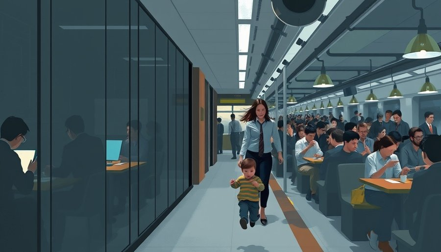
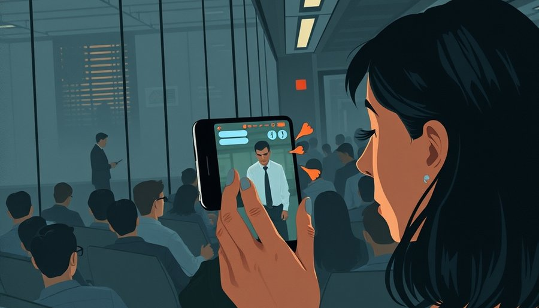
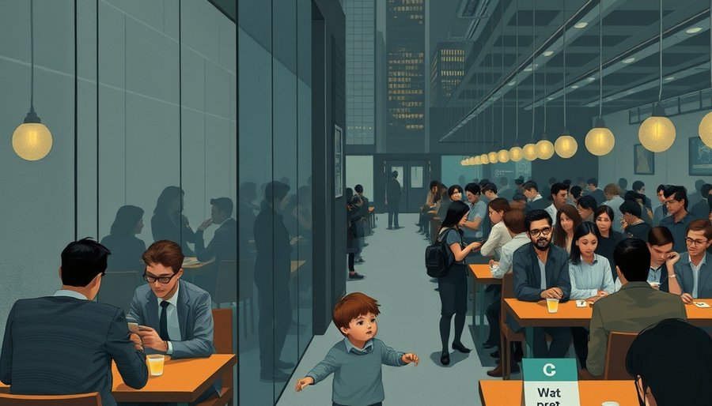

根据完整监控，幼童持玩具跑动，因身体失衡手部无意触及那名女性，接触时间极短。女性随即追抓、拉扯衣领，甚至掐住脖子，致其颈部出现红痕、严重受惊，后续还因情绪激动多次送医。在前后三次调解中，孩子父母不仅没有拿到伤害赔偿，反而在劝导下向对方支付了一笔“医药费”；对方索要精神损害赔偿与书面致歉，坚称自己是绝对受害人。
表面看，很多人第一反应可能是“熊孩子又闯祸了”，认为家长管教不力，孩子该受教训；或者认为成年人反应过当，但只是一桩情绪失控的个案。然而法律定性很清楚：4岁幼童属于无民事行为能力人，缺乏“性骚扰”必需的主观故意；成年人向幼童施加身体强制并造成伤害，早已越过正当自我保护的红线。事件的核心矛盾在于，法律上明显侵权的一方，反而成了被赔偿的对象。
这指向一个更深层的判断：公共场所容不下奔跑的孩子，不是因为个体道德滑坡，而是我们的冲突解决机制、舆论生态和空间设计，共同构成了一套“惩罚顺从者、奖励制造麻烦者”的系统。当一个孩子跑动引发的摩擦，最终让受害方掏钱，这套系统就已经在传递明确的信号：别做讲理的人。
纠纷处置者面对的是两方：一方理性、守法、不擅长极端手段；另一方情绪激烈、善于制造扰动、熟稔网络传播的打法。当“尽快平息事态”成为处置的优先级，决策会自然而然地把成本压向更顺从的一方——让讲理的人退让、掏钱，换取对方安静。这不是某个调解员的道德问题，而是机制的结构性激励：谁的噪音大、谁更能制造麻烦，谁就更容易“赢”。
在这次事件中，对方不断索要医药费、精神损失费，并以“不道歉就曝光”施加压力；而孩子父母坚持走正规渠道、拒绝拍摄道歉视频。调解的结果是，父母在劝导下支付了费用，对方拿到钱后立即将其解读为“行政证明”，继续在网络上以受害者自居。赔偿方向完全逆转，“谁受伤害谁赔钱”模糊了侵权责任边界。
一次两次是偶然，反复出现就成了负向激励。它持续向社会传递一个信号：情绪足够激烈、手段足够极端，就能通过制造麻烦获得补偿。代价是公众对纠纷解决的公正性产生普遍怀疑，整个社会的沟通与信任成本被不断推高。当讲理的人开始觉得自己是傻子，下一次冲突中，他们可能也会选择更激烈的方式——这就是机制腐蚀公共生活的路径。

如果说纠纷解决机制在现实中奖励了“闹”，那么短视频平台则在舆论场上成倍放大了这种奖励。该女性长期经营自媒体，账号里此前已大量发布与网约车司机吵架、与宿舍管理员吵架等强对立内容——一套成熟的“冲突起号”模式：在公共场所挑起矛盾、记录吵架过程、单方剪辑、以“维权”姿态发布。在这套运作里，事实并不重要，重要的是能否构建一个符合极化语境的完美“受害者”形象。
把4岁孩子的无意触碰定性为“骚扰”，瞬间把一场餐厅磕碰抬高到公共安全级议题。屏幕上“保护弱者”的正义感自动形成立场屏障，任何试图还原事实的声音都被贴上“帮凶”标签。短视频平台的算法奖励对立、奖励情绪、奖励立场鲜明，于是传播链条上的每一环——发布者、转发者、评论区——都拿到了继续加码的激励。理性的声音淹没在立场里，“还原事实”变成了需要勇气的行为。
更隐蔽的代价在于，标签化叙事一旦成功，就会反过来影响线下处置。调解者不可能完全无视网络舆论的压力，而“受害者”人设越牢固，现实中的谈判筹码就越大。流量经济不仅变现了冲突，也重塑了纠纷解决的权力天平。那个被掐脖子的孩子，在网线另一端，被简化成了一个骚扰者的符号；他的疼痛和恐惧，在算法里不值一提。

有人可能会说，这只是一起极端个案，不能推导出社会对儿童的“系统性不友好”。但如果我们把视线从单个纠纷移开，看公共空间的设计和日常舆论，会发现一种更沉默的排斥。
城镇化把餐厅、高铁、商场的人流密度推到极限，个体的私域空间被空前压缩。年轻群体普遍处于情绪过载状态，对噪音与打扰的容忍度骤降。幼童天生不可预测——会跑、会哭、会突然失衡——这些发育期天性在“高效率、绝对安静”的空间秩序要求下，被扣上“熊孩子”“没教养”的道德枷锁；家长稍有疏漏就遭整齐划一的讨伐。与之相对的是养宠群体的生态位持续上升：宠物可控、不产生责任冲突，是原子化都市人低风险的情感代偿；而他人的儿童被纯视为公共成本。
公共设施同样倾斜：宠物友好餐厅、宠物公园迅速增长，第三卫生间、亲子空间、儿童安全游乐区却严重缺失——规划与商业优先服务消费力强、更安静的成年人。育儿成本以“被指责”“赔钱”“无处可去”的形式，持续转嫁给带娃家庭。这不是任何人的阴谋，而是设计决策的后果：当公共空间被默认为“安静成年人的领地”，任何不可控的存在——奔跑的孩子、哭闹的婴儿——都会被感知为对他人领地的入侵。
当然，家长并非没有责任。孩子在公共场所跑动，确实需要管束；安全边界必须由成人设定。但问题在于，一个4岁孩子因发育期失衡造成的无意触碰，是否应该触发如此剧烈的惩罚？社会对“儿童成长必然犯错”的包容共识，正在快速蒸发。当一次磕碰可以被无限放大为公共安全事件，当纠纷解决系统性地让讲理的人退让，当空间设计不给童年留位置，我们其实是在共同建造一个对儿童、对家庭、对任何不可控生命都越来越不友好的公共生活。
三根神经其实是同一个根源：都市公共生活缺乏一张“共同承担”的网。当每个人都默认自己是原子化个体，冲突从不缺燃料。下一次，当身边一个孩子跑过，你会下意识地做什么？是侧身让开，还是皱眉掏出手机？
尾声
这起纠纷的最终结果，不是某一方的胜利。孩子一方付了钱，但失去了对公正的信心；另一方拿到了钱，但活在一个需要不断制造冲突才能确认自我价值的世界里。公共空间的“厌童”倾向，惩罚的不只是带娃家庭——它也在悄悄提高每个人对日常摩擦的反应烈度。当容忍的阈值持续降低，下一个被“掐脖子”的，可能就不只是孩子了。
小汪老师的成长观察笔记